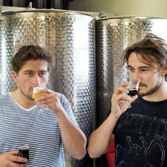
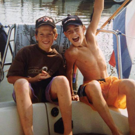

Krijtje
Dit bier is een hybride tussen een witbier en een saison. Krijtje heeft een lichte mout smaak die wordt gecomplimenteerd door kruidige koriander en fruitige sinaasappelsmaak.
OntdekHet brouwen van toegankelijke, bijzondere bieren met een eigen twist. Dat is waar wij voor staan. Al onze bieren zijn handgemaakte, ambachtelijke producten met nauwkeurig uitgezochte ingrediënten.
We brouwen momenteel 4 verschillende bieren die het hele jaar rond verkrijgbaar zijn. Daarnaast hebben we 't Kofschip. Een lijn barrel-aged bieren waarvan ieder kwartaal een nieuwe versie uitkomt.
Dit bier is een hybride tussen een witbier en een saison. Krijtje heeft een lichte mout smaak die wordt gecomplimenteerd door kruidige koriander en fruitige sinaasappelsmaak.
Ontdek
Geesteskind van Bryan, liefhebber van hoppige Amerikaanse bieren en Belgische saisons. Dit bier is gebrouwen met vijf verschillende hoppen, die allemaal één ding gemeen hebben; Citrus & grapefruit. Deze Pale Ale heeft daarom ook een bittere afdronk. Dit bier is een hybride tussen een Belgisch blond en een bittere Pale Ale uit Amerika.
Ontdek
Onze Tripel, het pareltje van Leon, waar we uren aan gesleuteld hebben. Deze flinke knaap heeft een fruitig aroma met een kruidige body. Door de kookwijze heeft dit bier een zoete, moutige smaak, die in balans wordt gebracht door Amerikaanse bitterhop.
Ontdek
In samenwerking met Brouwerij Zeeburg maken wij Wakatu. Een klassieke Belgian Pale Ale met een moderne twist. Een moutig en fruitig bier, dat tijdens de lagering is gedryhopt met Nieuw-Zeelandse Wakatu hop, die het bier een hint van bloemen en versgeraspte citrus meegeeft.
Ontdek
Onze barrel-aged lijn die regelmatig bij ons aanmeert met bijzondere bieren.
OntdekER WAREN EENS TWEE KNAAPJES... Die elkaar op 5-jarige leeftijd leerden kennen in het dorp Kudelstaart, onder de rook van Amsterdam. Ze waren onafscheidelijk; Leon en Bryan speelden samen op het schoolplein, samen naar een zeilkamp, street hockey op de straat, met de ene stel ouders naar Duinrell, met de andere stel ouders zeilen op het IJsselmeer en later jarenlang samen fanatiek ijshockey spelen bij de Amstel Tijgers in Amsterdam. Nadat Leon op 13 jarige leeftijd naar Amsterdam verhuisde, verwaterde het contact. Het duurde 10 jaar voordat de twee elkaar weer ontmoetten. Leon werkzaam in de keuken van een café, Bryan studerend en inmiddels ook woonachtig in Amsterdam. De twee maakten er een gewoonte van om samen een biertje te drinken, waarbij het proeven van verschillende bieren een favoriete bezigheid was.
Heel wat proeverijen verder kwamen de twee op het idee om zelf bier te brouwen.Eerst thuis in de keuken, nu op grotere schaal in hun eigen brouwerij te Badhoevedorp. Mooie, eerlijke, ambachtelijke bieren met een verrassende smaak; zoals ze die zelf graag drinken. Wat begon op het schoolplein met de twee knaapjes, wordt nu voortgezet in een paar mooie bieren, waarvan de namen herinneren aan de schooltijd: strafwerk – krijtje – juffie. Proef het zelf, dat is mooi huiswerk!
Op 4 februari organiseert RADION Amsterdam het Midwinter Sloten Bier Festival. Wij staan met vier van onze bieren paraat om jullie glazen te vullen. Bestel je glas en muntjes alvast via RADION. Tot 4 februari!
De komende tijd zullen wij onze nieuwe etiketten op de markt gaan brengen. Nieuwe batches worden voorzien van nieuwe etiketten. Hou het in de gaten!
Op 16 december lanceerden wij ons vijfde bier en eerste versie van 't Kofschip. Een rumbarrel aged saison met bret.
Ons vierde bier in samenwerking met brouwerij Zeeburg